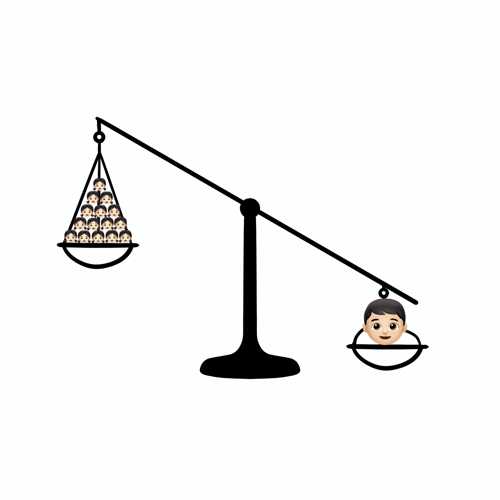

Ding Dong
Ding Dong
 Chit-Chat
Chit-Chat
 My Story
My Story

"Qing Dynasty Rules" in the Household, Still in 2030?
Today, my brother spent yet another whole day lounging on the sofa with his smartphone, while I? I was bustling about in the kitchen, quickly and efficiently managing both the cooking and the cleaning, plus taking care of the laundry. This isn’t due to any profound reason, but simply because I am a woman! It’s 2024, so why are the rules of our household still stuck in the era of a TV drama reminiscent of "Game of Thrones" — where intrigue and gender inequality are rife? This outdated mindset of male superiority should no longer have a place in society. Mind you, if I were to laze around all day like my brother, I’d swiftly be labeled as 'lazy' and given a stern talking-to. Talk about a double standard!!
#StoryShare #ChaoshanCulture #GenderInequality #Resistance #BreakGenderStereotypes #GenderEquality
2024-02-10
 1642
1642



About Teoswa
The Teoswa region is located in southern China, consisting of 3 cities in Guangdong Province: Shantou, Chaozhou, and Jieyang.
The Teoswa dialect originated before 2000 and has been preserved to this day. Today, there are still over 15 million people using
this language.
For Chinese people, Teoswa is a place more familiar to the tongue than to the mind. In Teoswa cuisine, seafood and marine delicacies take the spotlight, renowned for their lightness, freshness, and tender texture. Representative dishes include Teoswa beef hot pot and Teoswa beef balls.
For Chinese people, Teoswa is a place more familiar to the tongue than to the mind. In Teoswa cuisine, seafood and marine delicacies take the spotlight, renowned for their lightness, freshness, and tender texture. Representative dishes include Teoswa beef hot pot and Teoswa beef balls.
#TeoswaCulture #ChineseHistory
2023-09-12
2105
Teoswa Religious Beliefs & Rituals
• Religious Beliefs and Rituals often highlight the authority and status of men.
• Women are relegated to supporting roles, reinforcing gender inequality.
• Deities are worshipped for half of the year.
• Males assume economic and social roles. Females are expected to be submissive, with family being the central focus.
• Women are relegated to supporting roles, reinforcing gender inequality.
• Deities are worshipped for half of the year.
• Males assume economic and social roles. Females are expected to be submissive, with family being the central focus.
#TeoswaCulture #ChineseHistory #Religious #Sharing
2024-04-07
6772

The Unwritten Burden of Women in Cultural Heritage
"Green = Chinese holidays"
"Yellow = Teoswa ritual days"
In Teoswa, women spend approximately one-sixth of the year engaged in the demanding tasks of ritual activities, from preparation to execution, often working from dawn to dusk. This heavy burden of cultural transmission predominantly falls on women, highlighting the unequal distribution of gender roles within our community. We must recognize that the preservation and transmission of culture requires the collective effort of society, not just the responsibility of women.
"Yellow = Teoswa ritual days"
In Teoswa, women spend approximately one-sixth of the year engaged in the demanding tasks of ritual activities, from preparation to execution, often working from dawn to dusk. This heavy burden of cultural transmission predominantly falls on women, highlighting the unequal distribution of gender roles within our community. We must recognize that the preservation and transmission of culture requires the collective effort of society, not just the responsibility of women.
#TeoswaCulture #CulturalHeritage #GenderEquality
2024-02-12
9040